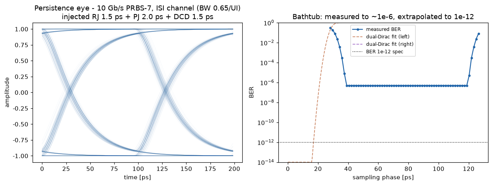
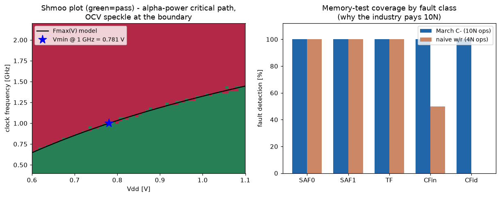

テスタ（ATE）の中核アルゴリズムをゼロから実装。テスト時間内に測れるのはBER 1e-6まで——それでもスペックは1e-12にある。ジッタのRJ/DJ分離と外挿・シュムープロットからのFmax/Vmin抽出・メモリMarchテストの故障カバレッジ証明という、テスト工学の三本柱を注入既知の真値と閉ループで検証した。
10Gb/s PRBS-7を帯域制限チャネル（ISI＝データ依存DJ）に通し、既知量のジッタを注入：RJ σ=1.5ps（ガウス）・周期ジッタ2ps（正弦）・DCD 1.5ps。エッジ時刻を直接揺らして波形を合成し、受信端でパーシスタンス・アイを構成。真値を自分で作っているから、後段の推定手法を閉ループで採点できる。

② バスタブとdual-Dirac外挿（右図）：実際に誤り数を数えて測れるのは1e-6まで（10⁶ビット）。Q-スケール（erfc⁻¹）で両裾を直線フィットし、RJ σと交差位置を推定→RJ推定1.69ps（誤差12.8%、PJのarcsine裾による既知バイアス込み）、BER 1e-12でのトータルジッタ26.2ps・アイ開口73.8psまで外挿。「測れない領域の保証」の作法そのもの。出所：ate/jitter_bathtub.py。
Vdd×クロックのpass/failマップ。デバイスはαべき則クリティカルパス（delay ∝ V/(V−Vt)^α, α=1.3）＋オンチップばらつき（境界のスペックル）でモデル化。マップからFmax(V)曲線をあて、Vmin@1GHz=0.781V・@1.5GHz=1.148Vを二分法で抽出——テスト結果を「動く/動かない」でなく設計へ返す数字に変換する仕事。

④ Marchメモリテストのカバレッジ証明（右図）：ビットレベルの故障シミュレータにSAF0/1・遷移故障TF・結合故障CFin/CFidを注入し、March C-（10Nオペ）とnaiveなw0/r0/w1/r1（4Nオペ）を対決。naiveは固着・遷移は捕まえるがCFin 50%・CFid 0%——March C-は全クラス100%。「なぜ業界は10Nを払うのか」をシミュレーションで証明。出所：ate/shmoo_march.py。